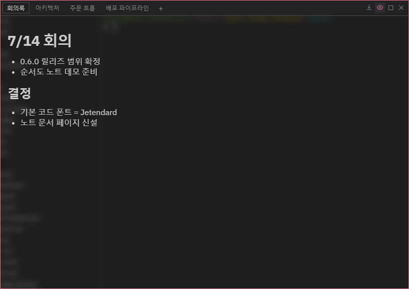
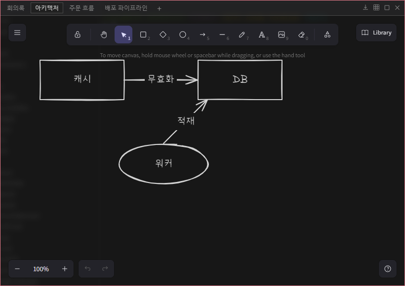
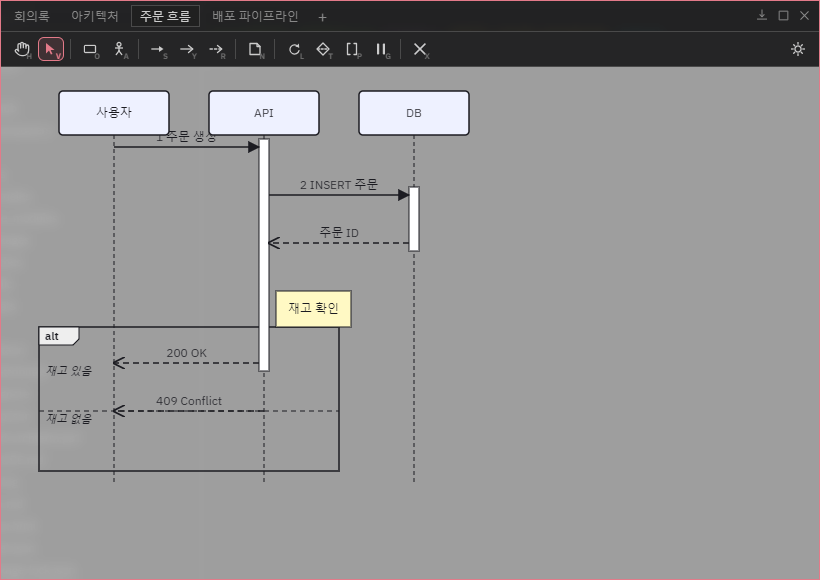
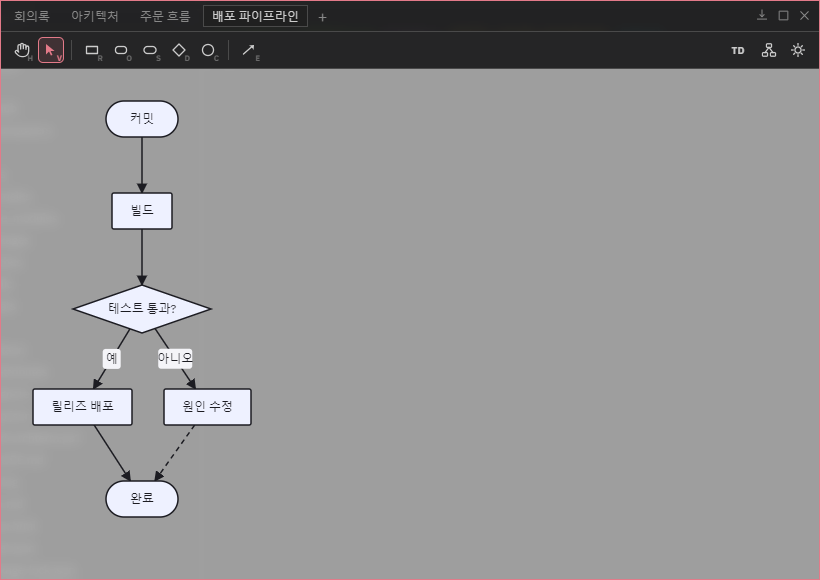

핵심 기능 · 메모 · 다이어그램
메모 · 다이어그램
터미널 옆에 항상 띄워 두는 플로팅 Post-it입니다. 마크다운 텍스트 메모, 자유 드로잉 그림 메모, 드래그로 그리는 시퀀스 다이어그램과 순서도(Mermaid 양방향)를 탭으로 관리하고, 앱 안 AI도 같은 노트를 읽고 씁니다.
노트 패널 열기
타이틀바의 메모 아이콘이나 Ctrl+Shift+N으로 엽니다. 패널은 드래그로 이동·8방향 리사이즈·최대화가 되고, 탭 우클릭으로 이름 변경 · 색상 · 고정 · 삭제를 할 수 있습니다. 노트는 Space와 무관하게 앱 전역에서 한 벌을 공유합니다.
새 노트는 탭 줄의 + 버튼으로 만듭니다 — 종류를 고르는 메뉴가 뜹니다:
| 종류 | 내용 | 내보내기 |
|---|---|---|
| 텍스트 메모 | 마크다운 편집 + 렌더 미리보기 | .md 파일 저장 |
| 그림 메모 | Excalidraw 자유 드로잉(오프라인) | PNG · SVG · PDF · 클립보드 |
| 시퀀스 다이어그램 | 드래그로 그리는 UML 시퀀스 | Mermaid(.mmd) · SVG · PNG · PDF · 클립보드 |
| 순서도 | 캔버스 ↔ Mermaid flowchart 양방향 | Mermaid(.mmd) · SVG · PNG · PDF · 클립보드 |
텍스트 메모 — 마크다운
본문은 마크다운으로 쓰고, 툴바의 미리보기 버튼으로 렌더 화면과 편집 화면을 오갑니다. 패널에 포커스가 있을 때 Ctrl+N으로 바로 새 메모를 만듭니다. 텍스트 메모는 "탭으로 열기"로 메인 패널 탭으로 떼어내 넓게 편집할 수도 있습니다.

그림 메모 — 자유 드로잉
Excalidraw 캔버스입니다(오프라인 동작 — 폰트까지 앱에 번들). 도형·화살표·손그림·텍스트를 자유롭게 그리고, 툴바의 격자 토글과 내보내기(PNG/SVG/PDF/클립보드)를 씁니다.

시퀀스 다이어그램 — 드래그로 그리는 UML
왼쪽 도구 팔레트에서 객체·액터를 놓고, 라이프라인 사이를 드래그해 메시지를 만듭니다. 동기 호출은 활성화 막대와 응답을 자동 생성하고, loop/alt/opt/par 프레임은 박스 드래그로 감쌉니다. 참가자·메시지는 자유 위치로 끌어 배치하고, 더블클릭으로 라벨을 고칩니다. 도구 단축키는 각 버튼 우하단 배지에 표시됩니다(H 손, V 선택 등).

내보내기는 Mermaid(.mmd) · SVG · PNG · PDF · Mermaid 클립보드 복사 — 그린 다이어그램이 그대로 sequenceDiagram 텍스트가 됩니다.
순서도 — Mermaid 양방향
도형 도구(R 사각 · O 둥근 · S 스타디움 · D 마름모 · C 원)로 노드를 놓고 E 연결선 도구로 노드 사이를 드래그하면 순서도가 됩니다. 노드 드래그=자유 배치(저장됨), 우클릭=모양 변경·화살표 스타일(실선/선만/점선/굵게)·삭제. 툴바 우측에서 방향(TD/LR/BT/RL) 전환·자동 정렬·배경(밝게/어둡게)을 바꿉니다.

이 노트는 양방향입니다 — 캔버스에서 그리면 Mermaid flowchart 코드가 되고, AI가 Mermaid로 만들어 준 순서도를 불러오면 편집 가능한 도형이 됩니다. 손으로 옮긴 좌표·배경 테마는 Mermaid 문법에 없어 내보낸 텍스트에는 담기지 않습니다.
AI 노트 공유
앱 안의 AI(claude·codex·gemini)는 orchterm-notes MCP로 같은 노트를 직접 생성·조회·수정·삭제합니다(기본 켜짐 — 설정에서 끌 수 있음). "회의 내용 노트로 정리해 줘", "이 로직 순서도로 그려 줘"라고 시키면 노트 패널에 바로 나타납니다.
- 텍스트 — 마크다운 그대로 읽고 씁니다.
- 시퀀스 · 순서도 — Mermaid로 쓰고, 읽을 때도 진짜 Mermaid가 반환되어 AI가 자기가 그린 다이어그램을 다시 읽고 고치는 왕복 편집이 됩니다.
- 그림 — Mermaid flowchart 또는 Excalidraw skeleton으로 생성(편집 가능한 도형). 읽기는 구성 요약 텍스트입니다.
같은 방식의 AI 할 일 공유와 달리 노트는 Space별로 나뉘지 않고 전역 한 벌입니다.
단축키
| 키 | 동작 |
|---|---|
| Ctrl+Shift+N | 노트 패널 열기/닫기 (mac Cmd+Shift+N) |
| Ctrl+N | 새 텍스트 메모 (패널 포커스 시) |
| V / H | 다이어그램 캔버스 — 선택 / 손(패닝) 도구 |
| R O S D C · E | 순서도 — 도형 5종 · 연결선 도구 |
| Delete | 다이어그램 캔버스 — 선택 요소 삭제 |
| Shift+Enter | 라벨 인라인 편집 중 줄바꿈 |